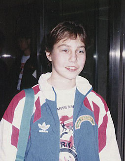

Miroslava Jantekova (CSSR)
1989 Medico Cup AA Silver Medalist

Miroslava was born on November 22, 1975, in Zilina (Slovakia). She was coached by Eva Horkava.
Competition Results
1989
Medico Cup: 2nd AA
Moscow News: 26th AA
1990
Chunichi Cup: 8th AA, 5th V
European Championships: 22nd AA, 7th V
GER-TCH-GBR Tri-Meet: 7th AA
Jr. European Team Championships: 8th AA
Moscow News: 23rd AA
Tokyo Cup: 4th V
1991
European Cup: 10th AA, 7th V
Kosice International: 10th AA
Rome Grand Prix: 9th AA
World Championships: 14th Team, 97th AA (prelims)
1992
European Championships: 55th AA
Hungarian International: 16th AA, 6th UB
This page was created on December
30, 2006.
© Gymn Forum